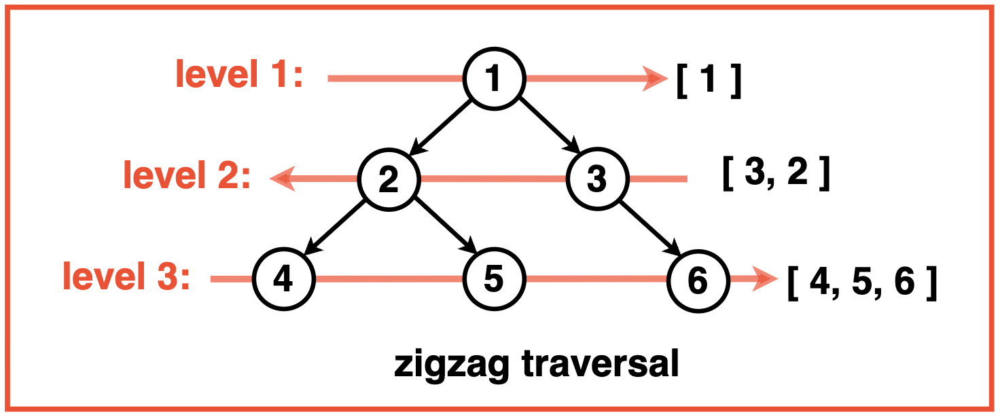
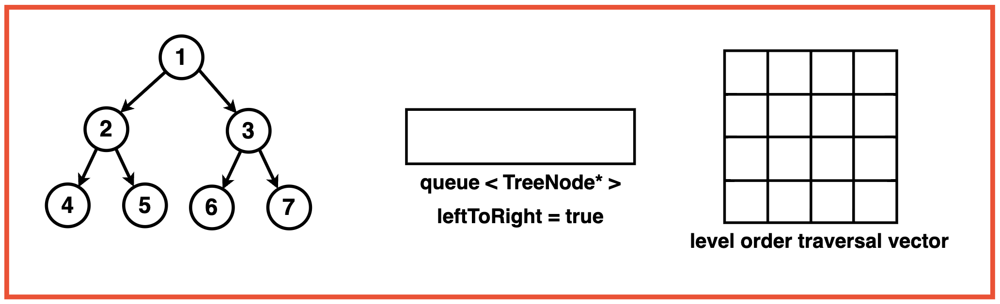
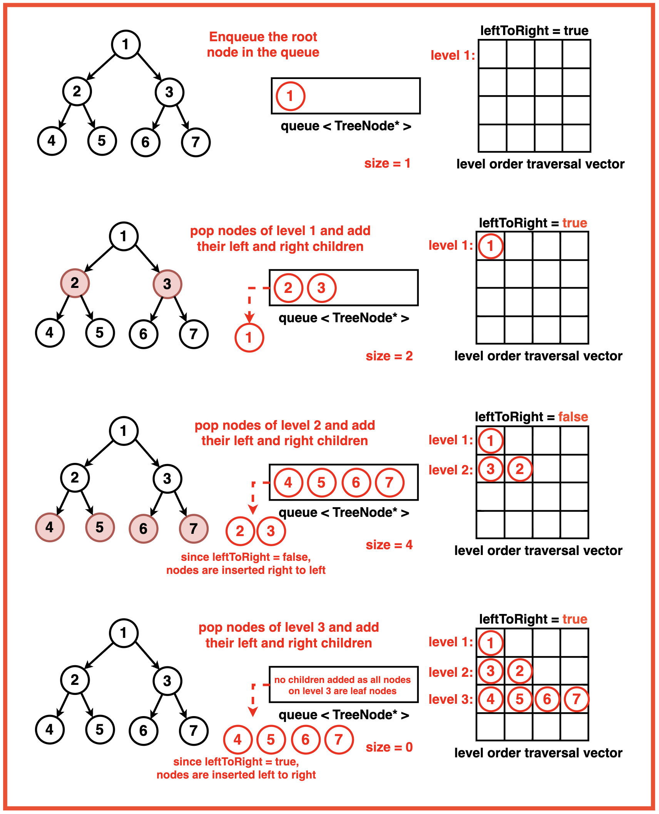

Problem Statement: Given a Binary Tree, print the zigzag traversal of the Binary Tree.
Zigzag traversal of a binary tree is a way of visiting the nodes of the tree in a zigzag pattern, alternating between left-to-right and right-to-left at each level.
Disclaimer: Don’t jump directly to the solution, try it out
yourself first.
Optimal Approach
Algorithm / Intuition
Zigzag traversal is a modification of the traditional level order traversal in a binary tree.
Level Order Traversal explores does at each level from left or right but zigzag traversal adds a twist by alternating the direction of exploration.
At odd levels, we proceed from left to right but for even levels the order is reversed, from right to left. This is achieved by introducing a `leftToRight` flag which controls the order in which nodes are processed at each level.
When `leftToRight` is true, nodes are inserted into the level vector from left to right and when its false, nodes are inserted right to left.

Algorithm:
Step 1: Initialise an empty queue data structure to store the nodes during traversal. Create a 2D array or a vector of a vector to store the level order traversal. If the tree is empty, return this empty 2D vector.
Step 2: Create a `leftToRight` flag to keep track of the direction of traversal. When `leftToRight` is true, nodes are inserted into the level vector from left to right and when its false, nodes are inserted right to left.

Step 3: Enqueue the root node ie. Add the root node of the binary tree to the queue.
Step 4: Iterate until the queue is empty:
Get the current size of the queue. This size indicates the number of nodes at the current level.
Create a vector ‘level’ to store the nodes at the current level.
Step 5: Iterate through ‘size’ number of nodes at the current level:
Pop the front node from the queue.
Store the node’s value in the level vector. Determine the index to insert the node’s value based on the traversal direction ‘leftToRight’.
If ‘leftToRight’ is true, the index is set to ‘i’ which means the node’s value will be inserted form left to right. If ‘rightToLeft’ is false, the index is set to size - 1 - i, meaning the node’s value will be inserted from right to left.
Step 6: Enqueue the left and right child nodes of the current node (if they exist) into the queue.

Step 7: After processing all the nodes at the current level, add the ‘level’ vector to the ‘ans’ 2D vector, representing the current level.
Reverse the direction of traversal for the next level by updating the ‘leftToRight’ flag to its opposite value. This toggling ensures that the nodes at the next level will be processed in the opposite direction, alternating between left-to-right and right-to-left.
Step 8: Once the traversal loop completes ie. all levels have been processed, return the ‘ans’ 2D vector containing the level-order traversal.
Code
#include <iostream>
#include <algorithm>
#include <climits>
#include <queue>
using namespace std;
// Node structure for the binary tree
struct Node {
int data;
Node* left;
Node* right;
// Constructor to initialize
// the node with a value
Node(int val) : data(val), left(nullptr), right(nullptr) {}
};
class Solution {
public:
// Function to perform zigzag level
// order traversal of a binary tree
vector<vector<int>> ZigZagLevelOrder(Node* root){
// Vector to store the
// result of zigzag traversal
vector<vector<int>> result;
// Check if the root is NULL,
// return an empty result
if(root == NULL){
return result;
}
// Queue to perform
// level order traversal
queue<Node*> nodesQueue;
nodesQueue.push(root);
// Flag to determine the direction of
// traversal (left to right or right to left)
bool leftToRight = true;
// Continue traversal until
// the queue is empty
while(!nodesQueue.empty()){
// Get the number of nodes
// at the current level
int size = nodesQueue.size();
// Vector to store the values
// of nodes at the current level
vector<int> row(size);
// Traverse nodes at
// the current level
for(int i = 0; i < size; i++){
// Get the front node
// from the queue
Node* node = nodesQueue.front();
nodesQueue.pop();
// Determine the index to insert the node's
// value based on the traversal direction
int index = leftToRight ? i : (size - 1 - i);
// Insert the node's value at
// the determined index
row[index] = node->data;
// Enqueue the left and right
// children if they exist
if(node->left){
nodesQueue.push(node->left);
}
if(node->right){
nodesQueue.push(node->right);
}
}
// Switch the traversal
// direction for the next level
leftToRight = !leftToRight;
// Add the current level's
// values to the result vector
result.push_back(row);
}
// Return the final result of
// zigzag level order traversal
return result;
}
};
// Helper function to print the result
void printResult(const vector<vector<int>>& result) {
for (const auto& row : result) {
for (int val : row) {
cout << val << " ";
}
cout << endl;
}
}
int main() {
// Creating a sample binary tree
Node* root = new Node(1);
root->left = new Node(2);
root->right = new Node(3);
root->left->left = new Node(4);
root->left->right = new Node(5);
root->right->left = new Node(6);
root->right->right = new Node(7);
Solution solution;
// Get the zigzag level order traversal
vector<vector<int>> result = solution.ZigZagLevelOrder(root);
// Print the result
printResult(result);
return 0;
}
import java.util.ArrayList;
import java.util.LinkedList;
import java.util.List;
import java.util.Queue;
// Node structure for the binary tree
class Node {
int data;
Node left;
Node right;
// Constructor to initialize
// the node with a value
Node(int val) {
data = val;
left = null;
right = null;
}
}
class Solution {
// Function to perform zigzag level
// order traversal of a binary tree
public List<List<Integer>> ZigZagLevelOrder(Node root) {
// List to store the
// result of zigzag traversal
List<List<Integer>> result = new ArrayList<>();
// Check if the root is null,
// return an empty result
if (root == null) {
return result;
}
// Queue to perform
// level order traversal
Queue<Node> nodesQueue = new LinkedList<>();
nodesQueue.add(root);
// Flag to determine the direction of
// traversal (left to right or right to left)
boolean leftToRight = true;
// Continue traversal until
// the queue is empty
while (!nodesQueue.isEmpty()) {
// Get the number of nodes
// at the current level
int size = nodesQueue.size();
// List to store the values
// of nodes at the current level
List<Integer> row = new ArrayList<>();
// Traverse nodes at
// the current level
for (int i = 0; i < size; i++) {
// Get the front node
// from the queue
Node node = nodesQueue.poll();
// Determine the index to insert the node's
// value based on the traversal direction
int index = leftToRight ? i : (size - 1 - i);
// Insert the node's value at
// the determined index
row.add(index, node.data);
// Enqueue the left and right
// children if they exist
if (node.left != null) {
nodesQueue.add(node.left);
}
if (node.right != null) {
nodesQueue.add(node.right);
}
}
// Switch the traversal
// direction for the next level
leftToRight = !leftToRight;
// Add the current level's
// values to the result list
result.add(row);
}
// Return the final result of
// zigzag level order traversal
return result;
}
}
// Helper function to print the result
class Main {
static void printResult(List<List<Integer>> result) {
for (List<Integer> row : result) {
for (int val : row) {
System.out.print(val + " ");
}
System.out.println();
}
}
public static void main(String[] args) {
// Creating a sample binary tree
Node root = new Node(1);
root.left = new Node(2);
root.right = new Node(3);
root.left.left = new Node(4);
root.left.right = new Node(5);
root.right.left = new Node(6);
root.right.right = new Node(7);
Solution solution = new Solution();
// Get the zigzag level order traversal
List<List<Integer>> result = solution.ZigZagLevelOrder(root);
// Print the result
printResult(result);
}
}
from collections import deque
# Node class for the binary tree
class Node:
def __init__(self, val):
self.data = val
self.left = None
self.right = None
class Solution:
# Function to perform zigzag level order traversal of a binary tree
def ZigZagLevelOrder(self, root):
# List to store the result of zigzag traversal
result = []
# Check if the root is None, return an empty result
if not root:
return result
# Queue to perform level order traversal
nodesQueue = deque()
nodesQueue.append(root)
# Flag to determine the direction of traversal (left to right or right to left)
leftToRight = True
# Continue traversal until the queue is empty
while nodesQueue:
# Get the number of nodes at the current level
size = len(nodesQueue)
# List to store the values of nodes at the current level
row = [0] * size
# Traverse nodes at the current level
for i in range(size):
# Get the front node from the queue
node = nodesQueue.popleft()
# Determine the index to insert the node's value based on the traversal direction
index = i if leftToRight else (size - 1 - i)
# Insert the node's value at the determined index
row[index] = node.data
# Enqueue the left and right children if they exist
if node.left:
nodesQueue.append(node.left)
if node.right:
nodesQueue.append(node.right)
# Switch the traversal direction for the next level
leftToRight = not leftToRight
# Add the current level's values to the result list
result.append(row)
# Return the final result of zigzag level order traversal
return result
# Helper function to print the result
def printResult(result):
for row in result:
for val in row:
print(val, end=" ")
print()
# Creating a sample binary tree
root = Node(1)
root.left = Node(2)
root.right = Node(3)
root.left.left = Node(4)
root.left.right = Node(5)
root.right.left = Node(6)
root.right.right = Node(7)
solution = Solution()
# Get the zigzag level order traversal
result = solution.ZigZagLevelOrder(root)
# Print the result
printResult(result)
// Node structure for the binary tree
class Node {
constructor(val) {
this.data = val;
this.left = null;
this.right = null;
}
}
class Solution {
// Function to perform zigzag level
// order traversal of a binary tree
ZigZagLevelOrder(root) {
// Array to store the
// result of zigzag traversal
const result = [];
// Check if the root is null,
// return an empty result
if (!root) {
return result;
}
// Queue to perform
// level order traversal
const nodesQueue = [];
nodesQueue.push(root);
// Flag to determine the direction of
// traversal (left to right or right to left)
let leftToRight = true;
// Continue traversal until
// the queue is empty
while (nodesQueue.length > 0) {
// Get the number of nodes
// at the current level
const size = nodesQueue.length;
// Array to store the values
// of nodes at the current level
const row = Array(size);
// Traverse nodes at
// the current level
for (let i = 0; i < size; i++) {
// Get the front node
// from the queue
const node = nodesQueue.shift();
// Determine the index to insert the node's
// value based on the traversal direction
const index = leftToRight ? i : (size - 1 - i);
// Insert the node's value at
// the determined index
row[index] = node.data;
// Enqueue the left and right
// children if they exist
if (node.left) {
nodesQueue.push(node.left);
}
if (node.right) {
nodesQueue.push(node.right);
}
}
// Switch the traversal
// direction for the next level
leftToRight = !leftToRight;
// Add the current level's
// values to the result array
result.push(row);
}
// Return the final result of
// zigzag level order traversal
return result;
}
}
// Helper function to print the result
function printResult(result) {
for (const row of result) {
for (const val of row) {
process.stdout.write(val + " ");
}
console.log();
}
}
// Creating a sample binary tree
const root = new Node(1);
root.left = new Node(2);
root.right = new Node(3);
root.left.left = new Node(4);
root.left.right = new Node(5);
root.right.left = new Node(6);
root.right.right = new Node(7);
const solution = new Solution();
// Get the zigzag level order traversal
const result = solution.ZigZagLevelOrder(root);
// Print the result
printResult(result);
Output
1
3 2
4 5 6 7
Complexity Analysis
Time Complexity: O(N) where N is the number of nodes in the binary tree. Each node of the binary tree is enqueued and dequeued exactly once, hence all nodes need to be processed and visited. Processing each node takes constant time operations which contributes to the overall linear time complexity.
Space Complexity: O(N) where N is the number of nodes in the binary tree. In the worst case, the queue has to hold all the nodes of the last level of the binary tree, the last level could at most hold N/2 nodes hence the space complexity of the queue is proportional to O(N). The resultant vector answer also stores the values of the nodes level by level and hence contains all the nodes of the tree contributing to O(N) space as well.
Video Explanation
Special thanks to Gauri Tomar for contributing to this article on takeUforward. If you also wish to share your knowledge with the takeUforward fam, please check out this article